Новости
Общегородской субботник 30 апреля 2015 года
«Сделаем наш город чище!»
Доброй традицией стало проведение 30 апреля в Тарусе общегородского субботника. Это мероприятие является по-настоящему народным. В этот день даже небольшой трудовой вклад каждого участника субботника в общее дело превращает наш любимый город в уютный дом и позволяет ему удивительно измениться.
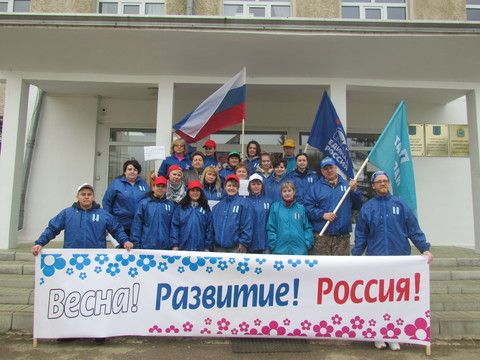 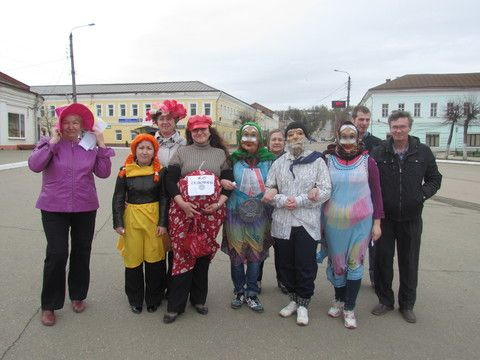 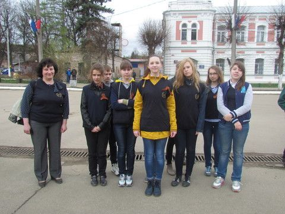
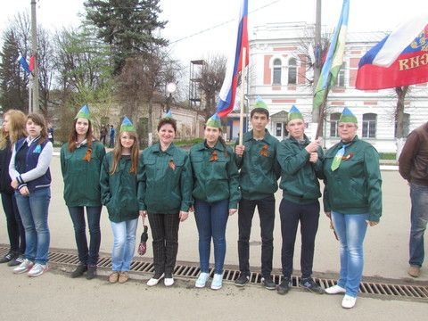
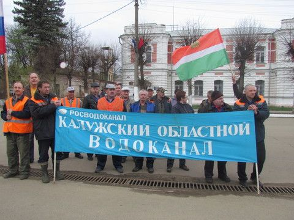
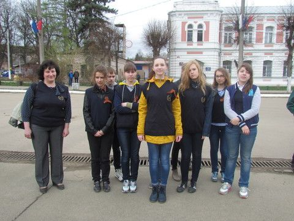
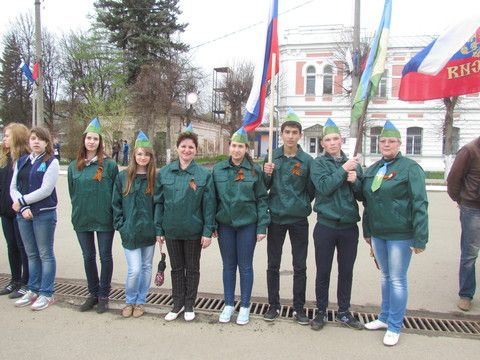
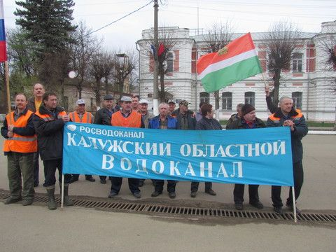
Апрельским утром на городской площади города Тарусы выстроились трудовые бригады:
- Администраций района и города
- СКБ КП ИКИ РАН
- филиала ОАО «Газпром газораспределение Калуга» в Тарусском районе («Пчелки»)
- Отдела социальной защиты населения администрации МР «Тарусский район» («Собесовский отряд»)
- объединенная команда отдела культуры, центра досуга населения, библиотек и школы искусств
- Тарусской средней школы № 1 им. М.Г. Ефремова
- Тарусской средней школы № 2 им. В.З. Власова
- объединенная команда Отдела образования, Тарусского дома детского творчества и Детской-юношеской спортивной школы («Радуга»)
- Отдела финансов администрации МР «Тарусский район» («Финики»)
- Тарусского цеха ГП «Калугаоблводоканал»
- Военного комиссариата Тарусского района
- МУП «Тарусажилдорстрой-Заказчик»
- Представителей КПРФ
Старт общегородскому субботнику, который в этом году проходил под девизом «Сделаем наш город чище!», дал глава администрации МР «Тарусский район» Е.М. Мальцев. Он поприветствовал всех собравшихся и сказал: «Несмотря на то, что погода сегодня немножко грустит, я думаю, что она позволит нам энергично поработать на закрепленных участках и достойно выполнить порученные задания. Этот год необычный – это год 70-летия Победы в Великой Отечественной войне и все мероприятия, которые проводятся в эти дни, приурочены к этому большому и светлому празднику. Ваш труд сегодня, я надеюсь, будет оценен всеми тарусянами и гостями нашего города. Вы, наверное, слышали, что по итогам областного конкурса по благоустройству Таруса была признана победителем и опередила Обнинск и Спас-Деменск, это произошло впервые, но мы надеемся, что заданную планку мы удержим, и будем действовать так, чтобы этот «флаг» не выпускать из рук. Удачи вам сегодня и в преддверии наших больших праздников!»
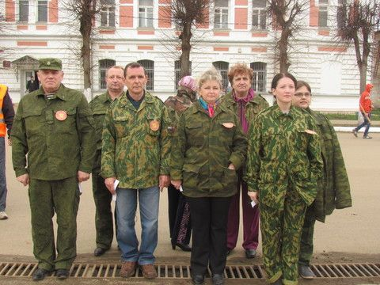 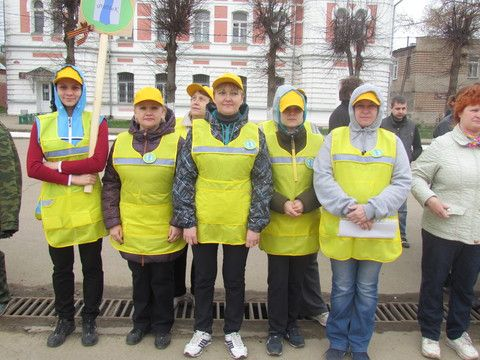
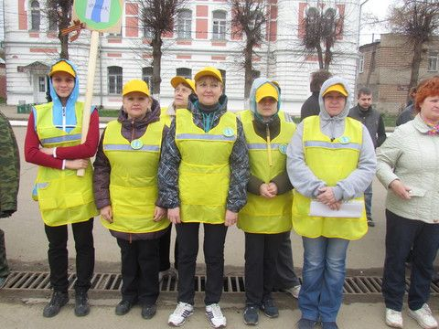

 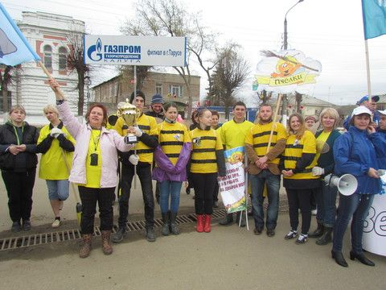
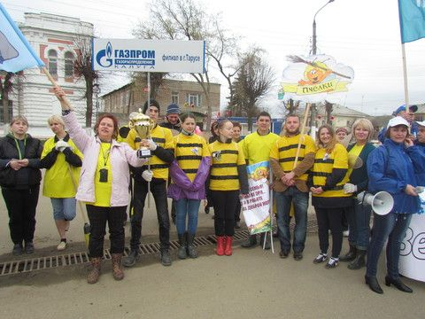
В тарусском празднике труда приняла активное участие Дроздова Татьяна Николаевна, депутат Законодательного Собрания Калужской области, Заслуженный учитель России. Она тепло поприветствовала трудовые бригады и сказала: «Я очень волнуюсь, потому что впервые приехала в Тарусу. Сегодня я оказалась на удивительном празднике и вижу, что вы делаете очень много для своего славного города. Я очень хочу поработать вместе с вами. С праздником, дорогие друзья!»
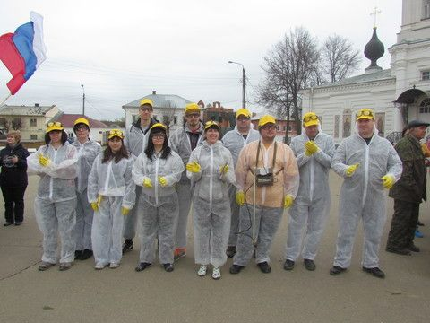 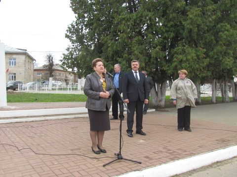
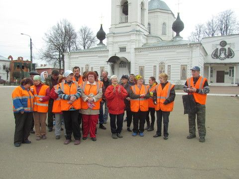
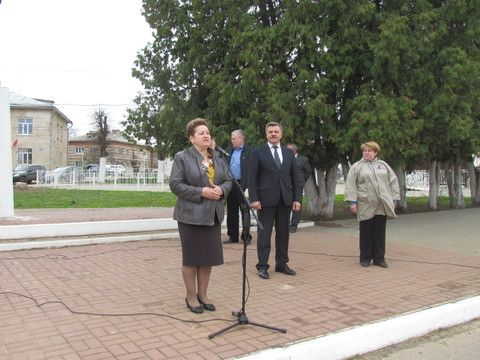
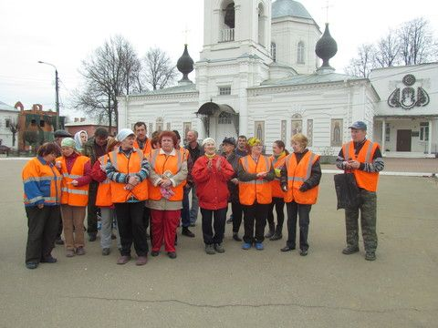


Небо хмурилось, дул ветер, похолодало, но это никому не испортило настроения. Участники мероприятия дружно приветствовали друг друга бодрыми и веселыми речевками, которые создавали праздничное настроение и придавали всему мероприятию боевой задор.
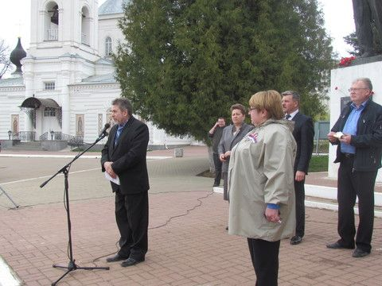 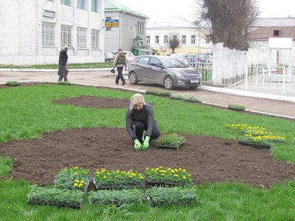 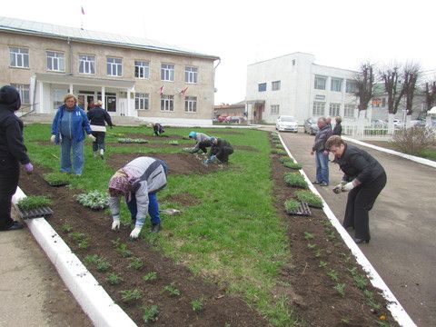 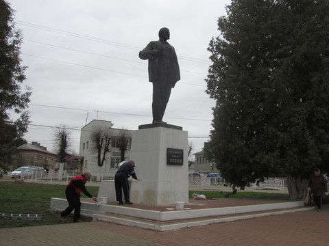 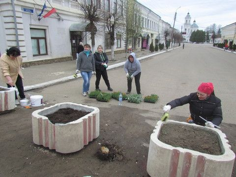 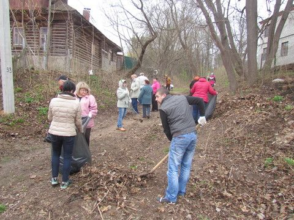Команда СКБ КП ИКИ РАН была одета в оригинальные костюмы и дружно прокричала свой девиз:
«Мы молодежь 21 века,
Всегда и везде мы одержим победу.
Работа команды будет видна,
Мы все уберем,
После нас – тишина».
Не отстала и команда «Радуга» (объединенная команда Отдела образования, Тарусского дома детского творчества и Детской-юношеской спортивной школы), ее речевка вселяла оптимизм и призывала к активному труду:
«Отряд мы «Радугой» назвали,
Инструменты в руки взяли.
Идем к успеху дружно,
Поработаем где нужно.
В порядок город приведем,
Чтоб стыдно не было потом.
Давайте потрудимся мы для себя,
Наш город прекрасный всем сердцем любя!»
Получив задания на работу, перчатки и мусорные пакеты трудовые отряды приступили к работе. Им предстояло убрать обочины центральной улицы города, провести санитарную уборку от мусора и валежника городские овраги, посадить деревья, собрать мусор в городских рощах.
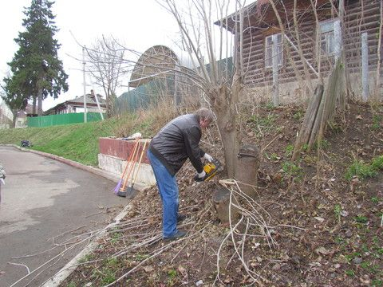 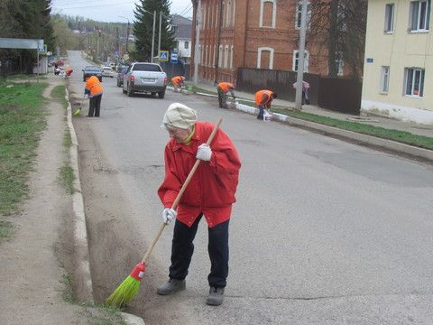 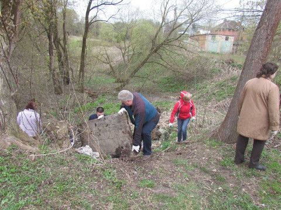
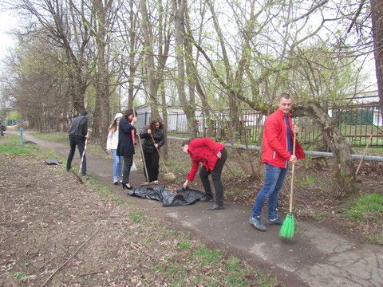
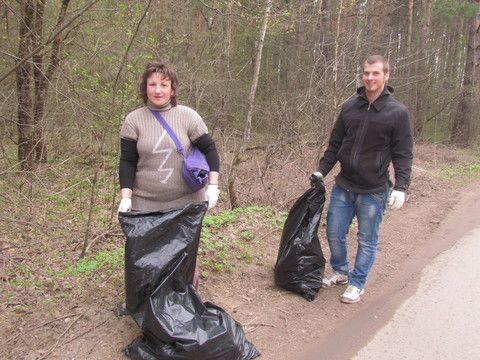
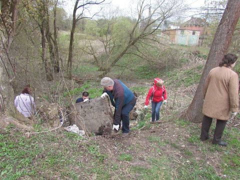
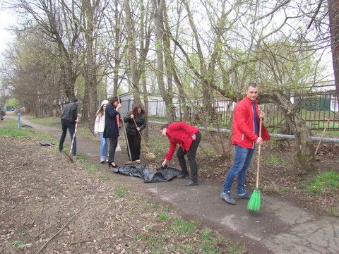
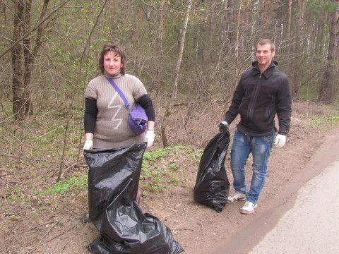
В субботнике также приняли участие коллективы Тарусской картинной галереи, Филиала ГБУ КО «МФЦ Калужской области» по Тарусскому району, ООО «Архитектурно-проектное бюро».
 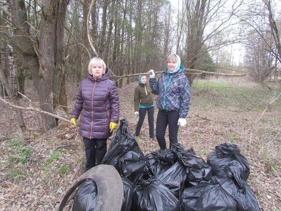
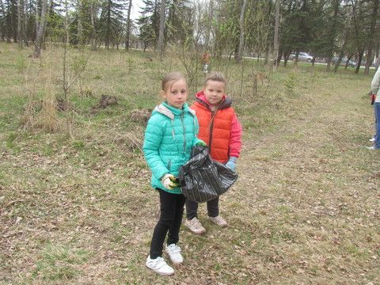
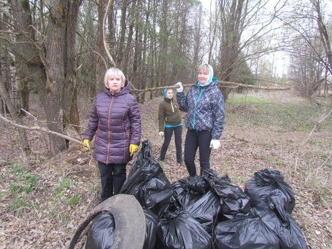
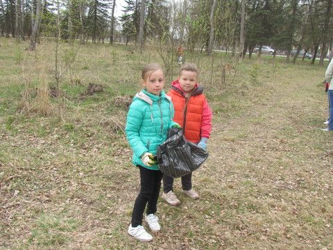

 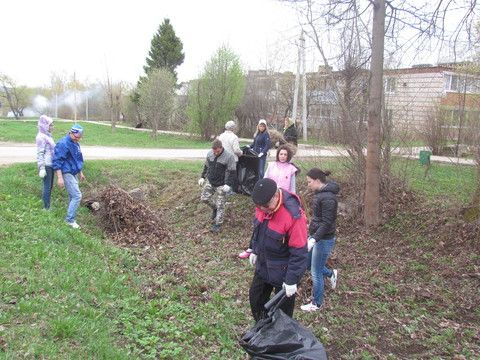
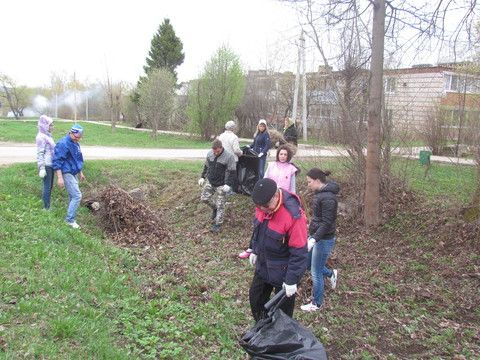
Честно выполнив работу, усталые и довольные представители коллективов собрались в березовой роще, где прошло подведение итогов общегородского субботника и награждение особо отличившихся команд.
 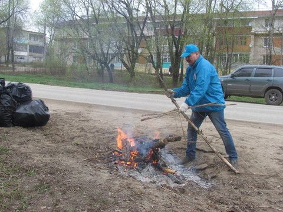
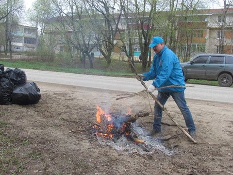
 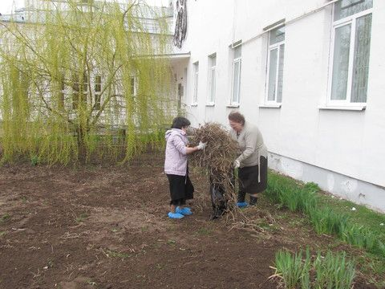
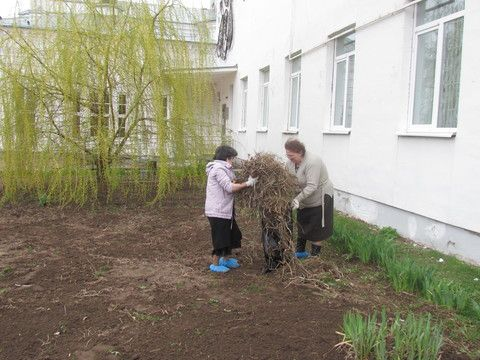


В этом году 1 место заслуженно было отдано бригаде Тарусской средней школы № 1. Учащиеся этой школы под руководством своих учителей в этом году сделали очень много для благоустройства прилегающей территории, а также очень активно убирали березовую рощу. Заведующая отделом образования, И.Н. Кокорина получила из рук главы администрации ГП «Город Таруса» А.Т. Демкина переходящий кубок и диплом.
Диплом за второе место получила команда филиала ОАО «Газпром газораспределение Калуга» в Тарусском районе («Пчелки»), и третье место заняла объединенная команда отдела культуры, центра досуга населения, библиотек и школы искусств.
Все остальные команды получили дипломы участников общегородского субботника и полезные подарки – садовый инструмент.

Работа на свежем весеннем воздухе обеспечила всем участникам прекрасное настроение, и непременное удовольствие от сделанного полезного дела!
Статья, фото Е. Жарова


{kind=link}
{kind=link}
{kind=link}
{kind=link}
{kind=link}
{kind=link}
{kind=link}
{kind=link}
{kind=link}
{kind=link}
{kind=link}
{kind=link}
{kind=link}
{kind=link}
{kind=link}
{kind=link}
{kind=link}
{kind=link}
{kind=link}
{kind=link}
{kind=link}
{kind=link}
{kind=link}
{kind=link}
{kind=link}
{kind=link}
{kind=link}
{kind=link}
{kind=link}
{kind=link}
{kind=link}
{kind=link}
{kind=link}
{kind=link}
{kind=link}
{kind=link}